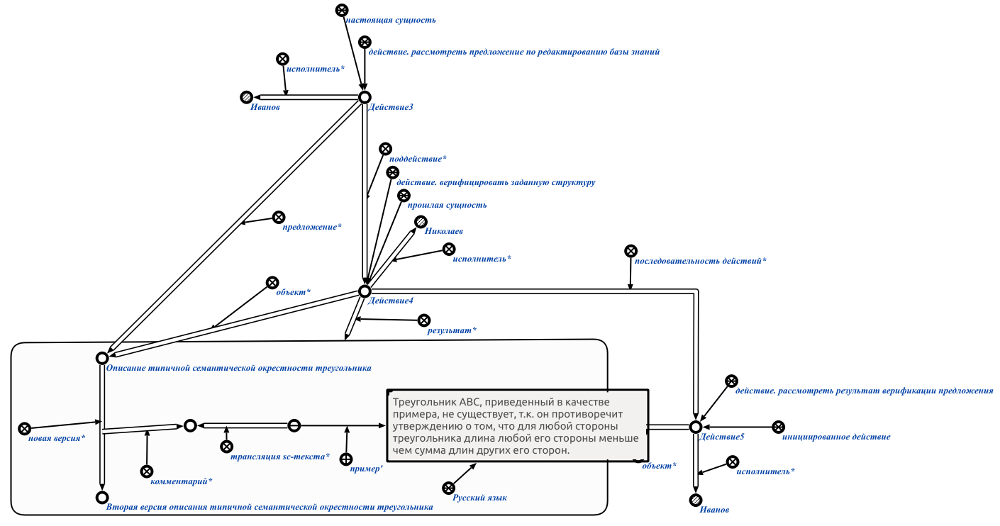

Задачей агента формирования задания на рассмотрение результата верификации предложения является формирование задания на рассмотрение результата верификации предложения* экспертом. Данный агент инициируется при условии появления в памяти вопросной конструкции, соответствующей действию. сформировать задание на рассмотрение результата верификации предложения. Первым аргументом запроса является знак действия. верифицировать заданную структуру, вторым аргументом является sc-ccылка, описывающая результат верификации экспертом* некоторого предложения* по редактированию базы знаний.
Возможные результаты работы агента:
- Если первый аргумент знака действия. сформировать задание на рассмотрение результата верификации предложения не является знаком действия. верифицировать заданную структуру, то генерируется сообщение об ошибке (Wrong 1st parameter! It must be sign of act_verify_the_desired_structure).
- Если второй аргумент знака действия. сформировать задание на рассмотрение результата верификации предложения не является sc-ссылкой, то генерируется сообщение об ошибке (Wrong 2nd parameter! It must be a link).
- Если пользователь, инициировавший выполнение агента, не является экспертом, то генерируется сообщение "Access denied. User must be a expert."
- В случае успешного выполнения агента генерируется конструкция, представленная на рисунке. Генерируется узел для новой версии предложения, в рамках которого будет разработано новое предложение в случае утверждения результата верификации администратором. Структура, содержащая комментарий и новую версию предложения, становится результатом работы знака действия. верифицировать заданную структуру (см. рисунок). Знак действия. верифицировать заданную структуру становится прошлой сущностью, удаляется из текущих процессов развития компьютерной системы и добавляется в историю развития компьютерной системы. Генерируется и инициируется знак действия. рассмотреть результат верификации предложения, исполнителем которого становится пользователь, разработавший верифицируемое предложение. Структура, описывающая результат верификации предложения (см. рисунок), становится объектом знака действия. рассмотреть результат верификации предложения, а само действие добавляется в текущих процессов развития компьютерной системы. Генерируется связка отношения последовательность действий*, связывающая знак действия. верифицировать заданную структуру и знак действия. рассмотреть результат верификации предложения.
